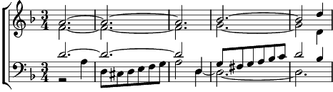

1. Le médium était concentré
L'assistance était convulsée
La table soudain, a remué
Et l'esprit frappeur a frappé
Refrain: Ce n'est que le petit bout de la queue du chat
Qui vous électrise
Ce n'est que le petit bout de la queue du chat
Qui a fait ce bruit là
Non l'esprit n'est pas encore là
Unissons nos fluides
Et recommençons nos ébats
Que le chat gâcha.
2. Puis un souffle étrange a passé
Une ombre au mur s'est profilée
L'assistance s'est mise à trembler
Mais le médium a déclaré ...
Refrain: Ce n'est que le petit bout de la queue du chat
Qui vous électrise
Ce n'est que le petit bout de la queue du chat
Qui passait par là.
Non l'esprit n'est pas encore là
Unissons nos fluides
Et recommençons nos ébats
Que le chat gâcha.
3. Alors en rond on se remit
Et puis on attendit l'esprit
Quand une dame poussa un cri
En disant je le sens c'est lui
Refrain: Ce n'est que le petit bout de la queue du chat
Qui vous électrise
Ce n'est que le petit bout de la queue du chat
Que pensiez-vous là
L'esprit ne vous aurait pas fait ça
Vous n'avez pas de fluide
Le médium alors se fâcha
Et chassa le chat
Coda: Une voix dit miaou me voilà
Quelle drôle de surprise
Car l'esprit s'était caché là
Dans la queue du...
dans la queue du...
dans la queue du chat.